笔记内容学自链接视频：https://www.bilibili.com/video/BV1p4411P7V3
注解
@override 重写
@FunctionalInterface 函数式接口
@Deprecated已废弃（新版已经淘汰）
注解不是程序本身，但可以对程序做出解释
注解可以加参数
注释：只是给人看的
注解：不但给人看，还给程序看
注解对程序有约束作用
内置注解
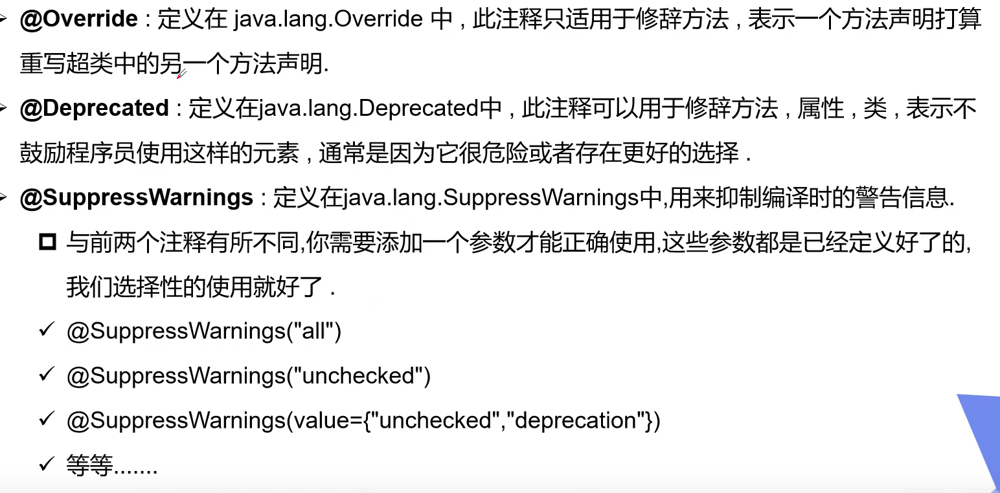
@SuppressWarnings镇压警告
@SuppressWarnings不仅可以用在方法上，还可以用在类上
参数：
all镇压全部警告
unchecked镇压未检查的警告
元注解
负责注解其他注解
java定义了四个元注解
@Target:目标 用于描述注解的使用范围
@Retention表示在什么级别保存该注释信息，用于描述注解的生命周期
@Documented用于生成文档信息
@Inherited说明子类可以继承父类的该注释
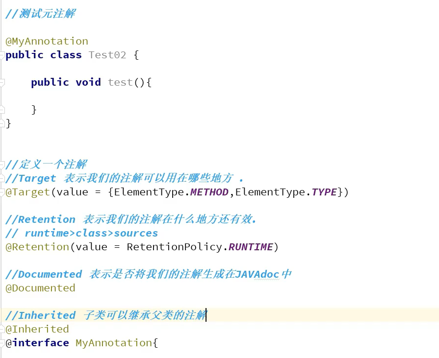
自定义注解
使用@interface自定义注解，idea自动调用java.lang.annotation.Annotation接口
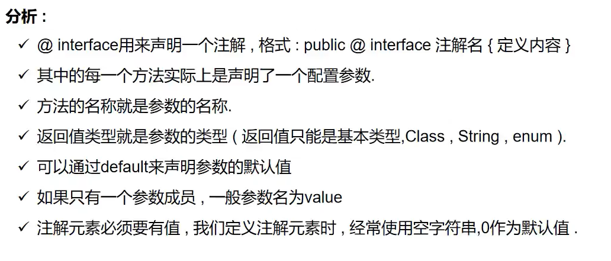
注解参数：参数类型+参数名+()
@MyAnnotation("Atmujie",id = 1)
public class 自定义注解 {
}
@Target(ElementType.TYPE)
@Retention(RetentionPolicy.RUNTIME)
@interface MyAnnotation{
//设置注解传入参数并设置默认值为空
String value() default "";
int id() default -1;//默认为-1代表不存在
}
只有参数名为values时可以省略参数名,否则哟啊写为参数名 = 值的格式
反射
Reflection反射
反射机制允许程序在执行期间借助Reflection API取得类的任何信息，并能直接操作任意对象的内部属性和方法
获取反射对象
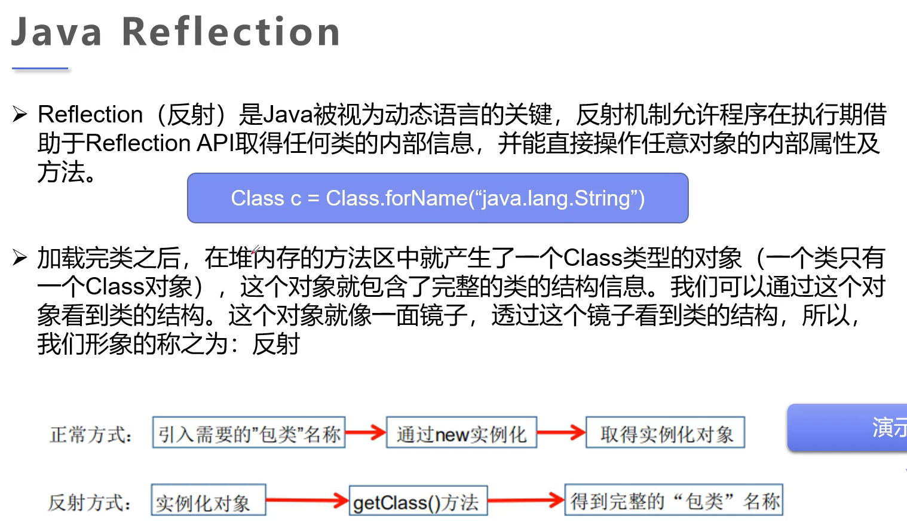
反射的主要API
java.lang.Class: 代表一个类
java.lang.reflect.Method: 代表一个方法
java.lang.reflevt.Field: 代表类的成员对象
java.lang.redlevt.Constructor代表类的构造器
一个类在内存中只有一个Class
一个类被加载后，类的整个结构都会被封装在Class中
反射获取的就是类的Class对象
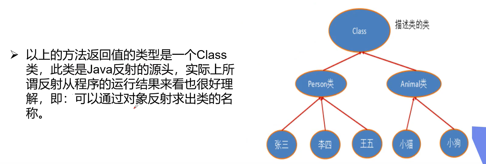
得到Class类的方式
一个Class对象对应的是加载到JVM虚拟机的一个.class实例
想反射必先得到Class
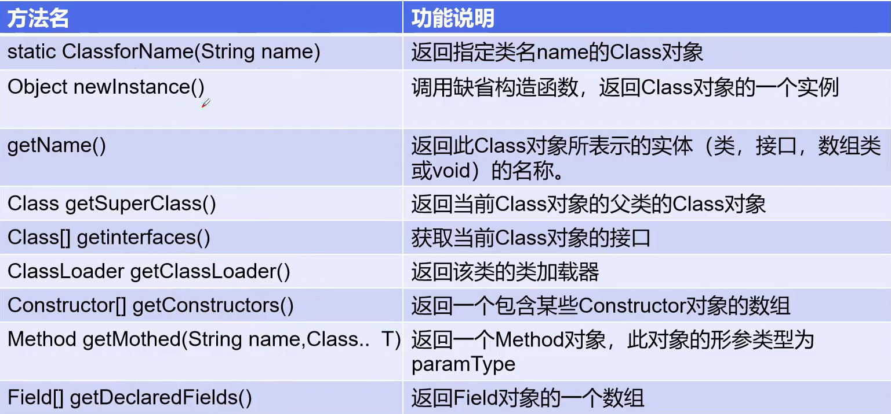
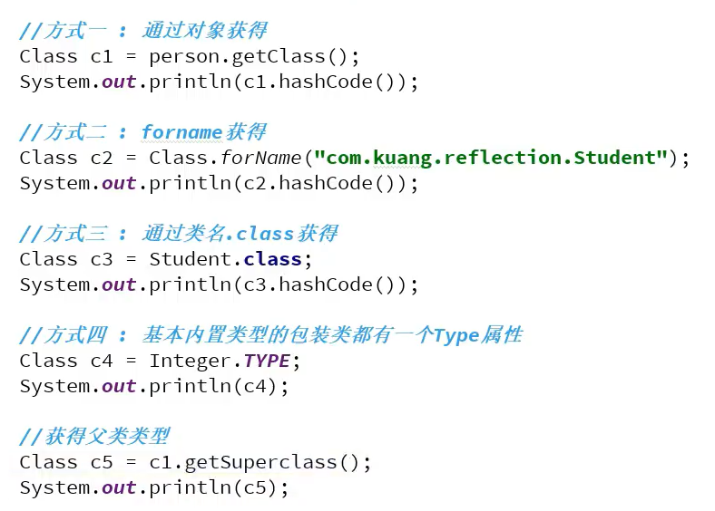
//获得
package 注解与反射.反射;
public class SuperClass {
public String name = "super";
public int values = 1;
public int time = 18;
public SuperClass(String name) {
this.name = name;
}
public String Superclass(){
return this.name;
}
}
Class对象
package 注解与反射.反射;
public class SuperClass {
public String name = "super";
public int values = 1;
public int time = 18;
public SuperClass(String name) {
this.name = name;
}
public String Superclass(){
return this.name;
}
}
package 注解与反射.反射;
public class 获取Class对象 {
public static void main(String[] args) {
try {
SuperClass superClass = new SuperClass("Atmujie");
//通过对象获得Class
Class<? extends SuperClass> Class1 = superClass.getClass();
//通过forname获取Class(需要抛出异常)
Class<?> Class2 = Class.forName("HelloWorld.注解和反射.反射.SuperClass");
//通过类名获取Class
Class<SuperClass> superClassClass = SuperClass.class;
//通过内置属性包装类的TYPE获取
Class<Integer> integerClass = Integer.class;
} catch (ClassNotFoundException e) {
e.printStackTrace();
}
}
}
有Class对象的类型
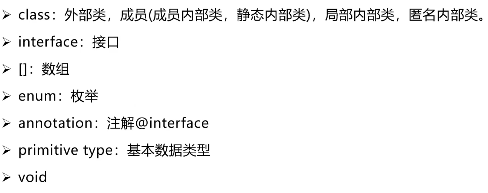
类的初始化
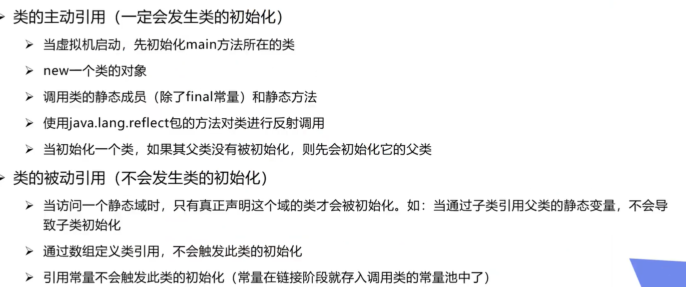
获取类的信息
package 注解与反射.反射;
import java.lang.reflect.Field;
import java.lang.reflect.Method;
public class 获取类的信息 {
public static void main(String[] args) throws ClassNotFoundException {
//获取Class
SuperClass superClass = new SuperClass("Atmujie");
Class<? extends SuperClass> aClass = superClass.getClass();
//获取类名
System.out.println("=================类名==============");
System.out.println(aClass.getName());
//获取类的简易名
System.out.println("=================简易名==================");
System.out.println(aClass.getSimpleName());
//获取public属性
System.out.println("=================public属性===================");
Field[] fields = aClass.getFields();
for (Field field : fields) {
System.out.println(field);
}
//获取全部属性
System.out.println("=================全部属性=================");
Field[] declaredFields = aClass.getDeclaredFields();
for (Field declaredField : declaredFields) {
System.out.println(declaredField);
}
//获取本类与父类的所有public方法
System.out.println("================本类与父类的public方法====================");
Method[] methods = aClass.getMethods();
for (Method method : methods) {
System.out.println(method);
}
//获取本类的所有方法
System.out.println("================本类所有方法====================");
methods = aClass.getDeclaredMethods();
for (Method method : methods) {
System.out.println(method);
}
}
}
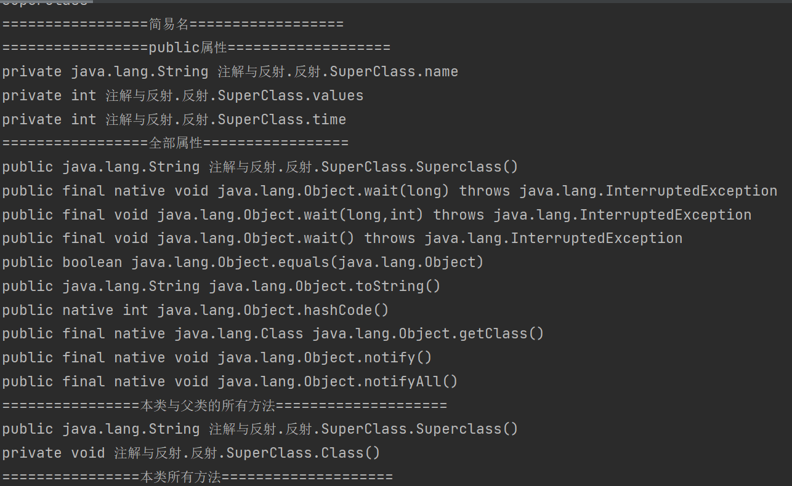
通过反射动态创建对象以及执行方法
创建对象
//创建Class
SuperClass atmujie = new SuperClass("Atmujie");
Class<? extends SuperClass> aClass = atmujie.getClass();
//forName创建Class
Class<?> aClass1 = Class.forName("注解与反射.反射.SuperClass");
可以通过多种方式创建Class,这只是其中一种
构造一个对象
无参或者定义了无参构造器时
//构造一个对象(无参或有无参构造器)
SuperClass superClass = aClass.newInstance();
//没有new的情况下构造对象(无参或有无参构造器)
SuperClass superClass1 = (SuperClass)aClass1.newInstance();
有参或者没有定义无参构造器时
//构造一个对象(有参或没有无参构造器)【默认调用aClass1】
/*获取构造器*/
Constructor<?> declaredConstructor = aClass1.getDeclaredConstructor(String.class);
/*通过构造器构造对象*/
SuperClass aaa = (SuperClass)declaredConstructor.newInstance("AAA");
通过反射获取方法
//通过反射获取方法【getDeclaredMethod(name,values)】
SuperClass c1 = (SuperClass)aClass1.newInstance();
Method declaredMethod = aClass1.getDeclaredMethod("Superclass");
/*初始化运行方法*/
declaredMethod.invoke(c1);
System.out.println(c1.Superclass());
通过反射操作属性
//通过反射操作属性
SuperClass c2 = (SuperClass) aClass1.newInstance();
Field name = aClass1.getDeclaredField("name");
/*取消安全检测*/
name.setAccessible(true); //private属性要取消安全检测才能改
/*修改*/
name.set(c2,"MUJIE");
System.out.println(c2.Superclass());
完整代码
import java.lang.reflect.Constructor;
import java.lang.reflect.Field;
import java.lang.reflect.Method;
public class 动态创建对象 {
public static void main(String[] args) throws Exception {
//创建Class
SuperClass atmujie = new SuperClass("Atmujie");
Class<? extends SuperClass> aClass = atmujie.getClass();
//forName创建Class
Class<?> aClass1 = Class.forName("注解与反射.反射.SuperClass");
//构造一个对象(无参或有无参构造器)
SuperClass superClass = aClass.newInstance();
//没有new的情况下构造对象(无参或有无参构造器)
SuperClass superClass1 = (SuperClass)aClass1.newInstance();
//构造一个对象(有参或没有无参构造器)【默认调用aClass1】
/*获取构造器*/
Constructor<?> declaredConstructor = aClass1.getDeclaredConstructor(String.class);
/*通过构造器构造对象*/
SuperClass aaa = (SuperClass)declaredConstructor.newInstance("AAA");
//通过反射获取方法【语法：getDeclaredMethod(name,values)】
SuperClass c1 = (SuperClass)aClass1.newInstance();
Method declaredMethod = aClass1.getDeclaredMethod("Superclass");
/*初始化运行方法*/
declaredMethod.invoke(c1);
System.out.println(c1.Superclass());
//通过反射操作属性
SuperClass c2 = (SuperClass) aClass1.newInstance();
Field name = aClass1.getDeclaredField("name");
/*取消安全检测*/
name.setAccessible(true);//private属性要取消安全检测才能改
/*修改*/
name.set(c2,"MUJIE");
System.out.println(c2.Superclass());
}
}
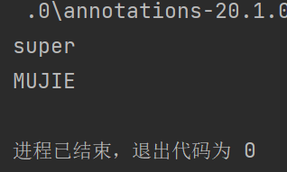
注：关闭安全可以提高性能
性能占用：普通调用 << 关闭安装检测的反射调用 < 反射调用
获取注解信息
类的属性与数据库的对应关系
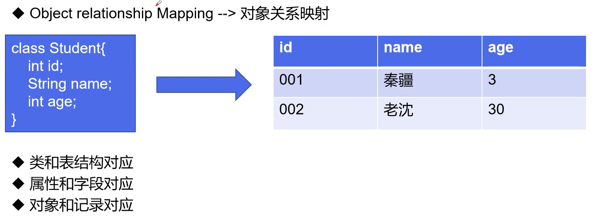
获取类与属性的注解信息
import java.lang.annotation.ElementType;
import java.lang.annotation.Retention;
import java.lang.annotation.RetentionPolicy;
import java.lang.annotation.Target;
import java.lang.reflect.Field;
public class 获取注解信息 {
public static void main(String[] args) throws Exception {
//创建反射对象
Class<Annotation> c1 = Annotation.class;
//获取类的注解信息
java.lang.annotation.Annotation[] declaredAnnotations = c1.getDeclaredAnnotations();
for (java.lang.annotation.Annotation declaredAnnotation : declaredAnnotations) {
System.out.println(declaredAnnotation);
}
System.out.println("=====================================");
//获取类的注解值
ClassAnnotation annotations = (ClassAnnotation) c1.getAnnotation(ClassAnnotation.class);
String tableName = annotations.tableName();
System.out.println(tableName);
System.out.println("=====================================");
//获取属性信息
Field[] declaredFields = c1.getDeclaredFields();
for (Field declaredField : declaredFields) {
System.out.println(declaredField);
}
System.out.println("=====================================");
//获取指定属性对应的注解信息
Field id = c1.getDeclaredField("id");
java.lang.annotation.Annotation[] annotations1 = id.getAnnotations();
/*获取全部*/
for (java.lang.annotation.Annotation annotation : annotations1) {
System.out.println(annotation);
}
System.out.println("+++++++++++++++----------------++++++++++++++");
/*获取指定*/
FieldAnnotation fieldAnnotation = id.getAnnotation(FieldAnnotation.class);
System.out.println(fieldAnnotation.column());
System.out.println(fieldAnnotation.type());
System.out.println(fieldAnnotation.length());
}
}
//定义一个测试类
@ClassAnnotation(tableName = "db_测试")
class Annotation{
@FieldAnnotation(column = "id",type = "int",length = 10)
private int id;
@FieldAnnotation(column = "username",type = "varchar",length = 100)
private String username;
@FieldAnnotation(column = "password",type = "varchar",length = 100)
private String password;
public Annotation() {
}
public Annotation(int id, String username, String password) {
this.id = id;
this.username = username;
this.password = password;
}
public int getId() {
return id;
}
public void setId(int id) {
this.id = id;
}
public String getUsername() {
return username;
}
public void setUsername(String username) {
this.username = username;
}
public String getPassword() {
return password;
}
public void setPassword(String password) {
this.password = password;
}
}
//定义类的注解
@Target(ElementType.TYPE)
@Retention(RetentionPolicy.RUNTIME)
@interface ClassAnnotation{
String tableName();
}
//定义属性的注解
@Target(ElementType.FIELD)
@Retention(RetentionPolicy.RUNTIME)
@interface FieldAnnotation{
String column();
String type();
int length();
}
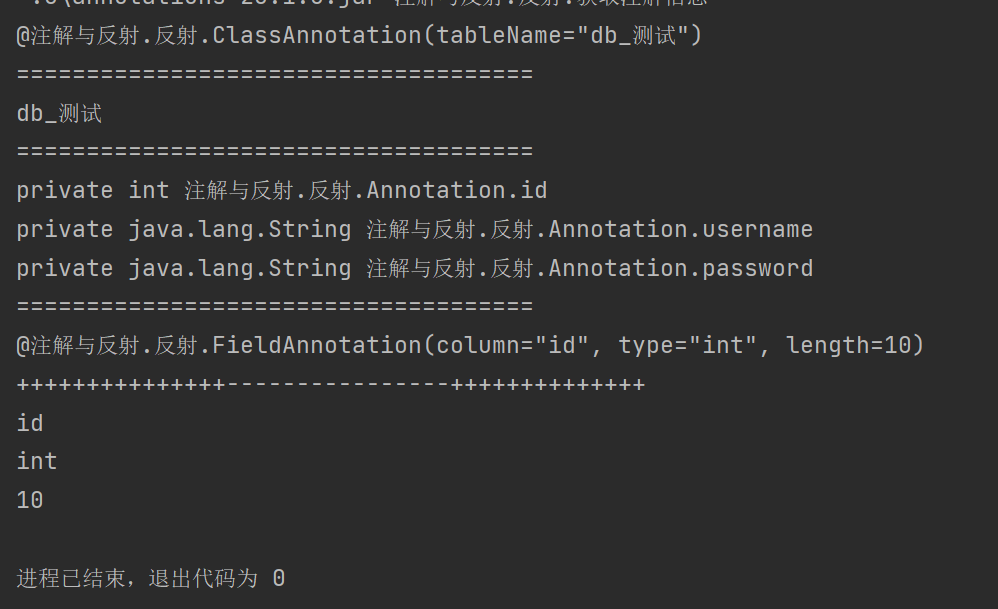
通过反射执行方法实例演示
通过反射在电脑上弹出计算器
已知
Runtime.getRuntime().exec("calc");
通过此方法可以弹出计算器
反射：
//第一步 所有反射的基本-获取class类
Class<?> runtime = Class.forName("java.lang.Runtime");
然后看看Runtime类
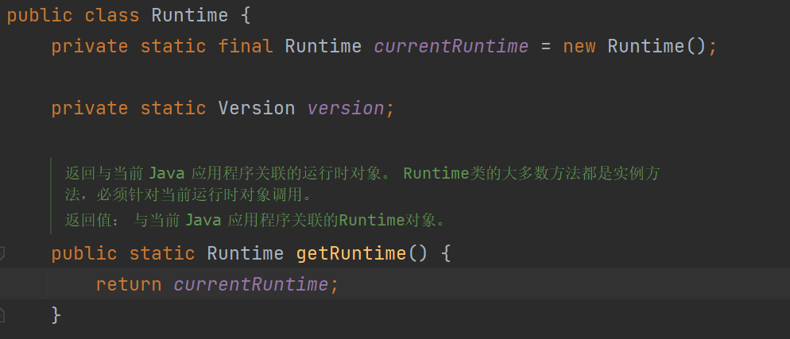
看源码可以得知，我们无法直接new Runtime(),但在类的最开始，程序就实例化了Runtmie类并教给了变量currentRuntime
当调用getRuntime方法时，返回该实例化
静态类的概念
类是无法直接定义静态属性的
所以想写一个静态类，就只能在类中写一个静态的属性调用它本身，然后用一个静态的方法输出
public class 测试 { private static final 测试 cs = new 测试(); public static 测试 aaa(){ return cs; } }或者只定义一个静态方法
public class 测试 { public static 测试 aaa(){ return new 测试(); } }这样这个类就成了静态类
为什么Runtime不能new
理论上即使是静态类，同样是可以实例化，Runtmie不能被实例化的原因很简单
它的构造器是
private属性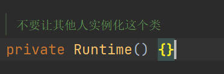
而默认的构造器不是默认属性便是
public外部类实例化时无法完成对构造器的调用，所以不能new[构造器是在调用类时必须调用的方法]
public class 测试 { private static final 测试 cs = new 测试(); public static 测试 aaa(){ return cs; } private 测试() { } }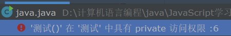
了解了以上两点，就可以继续分析
所以最开始的示例应该如此理解
new Runtime.exec("calc");
但Runtime是个构造器为private的静态类，所以只能先得到它的实例化，然后调用exec
Runtime.getRuntime()/*得到实例化*/.exec("calc");
反射
接着继续第二步，得到exec方法
Method exec = clazz.getMethod("exec",String.class);
如果构造器不为private，接下来应该是这样
Constructor<?> constructor = cs.getConstructor(); // 得到该类的构造器
测试 o = (测试) constructor.newInstance(); // 通过得到的构造器将类实例化
o.A(); // 调用方法
/*因为是无参构造，所以也可以这样*/
Class<?> cs = Class.forName("测试");
测试 o = (测试) cs.newInstance(); // 直接通过class对象将类实例化
o.A();
但private属性的构造器明显不能如此调用
所以我们要得到Runtime的实例化
//第一步 所有反射的基本-获取class类
Class<?> runtime = Class.forName("java.lang.Runtime");
//第二步，得到Runtime的实例化和exec方法
Method getRuntime = clazz.getMethod("getRuntime"); // 得到getRuntmie方法
Object invoke = getRuntime.invoke(runtime); // 初始化getRuntime方法
Method exec = clazz.getMethod("exec",String.class); // 得到exec方法
使用invoke对得到的方法初始化，就可以得到该方法的返回值，初始化的思路同python的SSTI
invoke需要传入调用底层方法的对象，对于getRuntmie，底层方法就是获取到的class
得到的返回值即为new Runtmie()
然后第三步，以得到的返回值为底层对象，调用非静态的exec
//第一步 所有反射的基本-获取class类
Class<?> runtime = Class.forName("java.lang.Runtime");
//第二步，得到Runtime的实例化和exec方法
Method getRuntime = runtime.getMethod("getRuntime"); // 得到getRuntmie方法
Object invoke = getRuntime.invoke(runtime); // 初始化getRuntime方法
Method exec = runtime.getMethod("exec",String.class); // 得到exec方法
//第三步，调用exec
exec.invoke(invoke,"calc");
此时invoke调用的底层是不是没有new Runtime和外部调用的底层了，而是Runtmie内部已经实例化的底层，所以可以执行exec方法
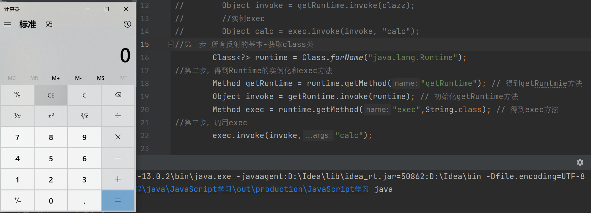
成功通过反射弹出了计算器